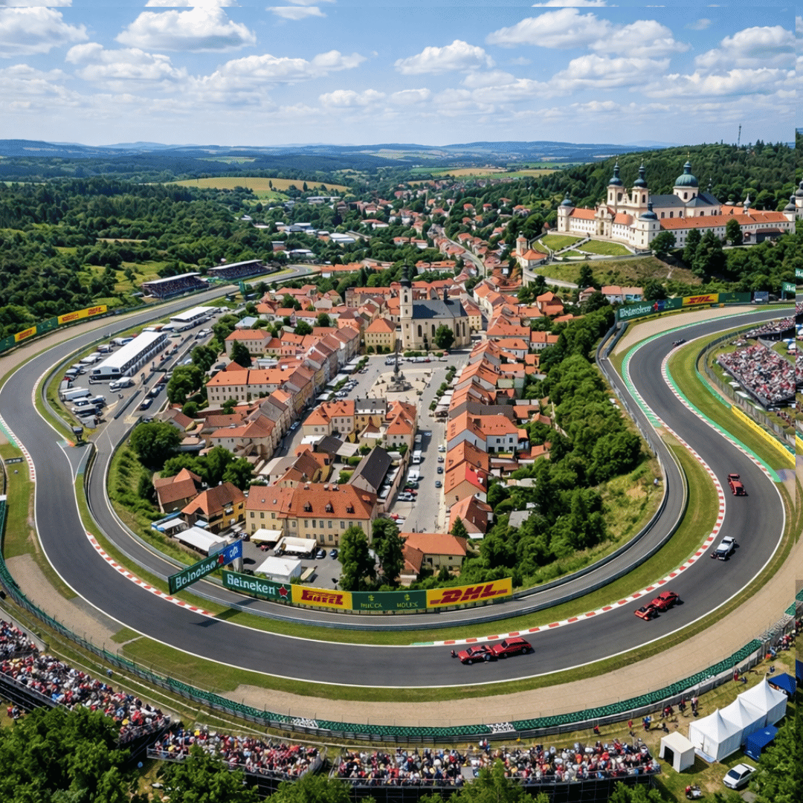

Poté, co vedení F1 oficiálně potvrdilo zrušení dubnových závodů v Saúdské Arábii a Bahrajnu, přichází náhrada, kterou nikdo nečekal. Zapomeňte na pouštní prach a umělé osvětlení, letošní jaro ovládnou střední Čechy! FIA právě schválila městský okruh v Příbrami.